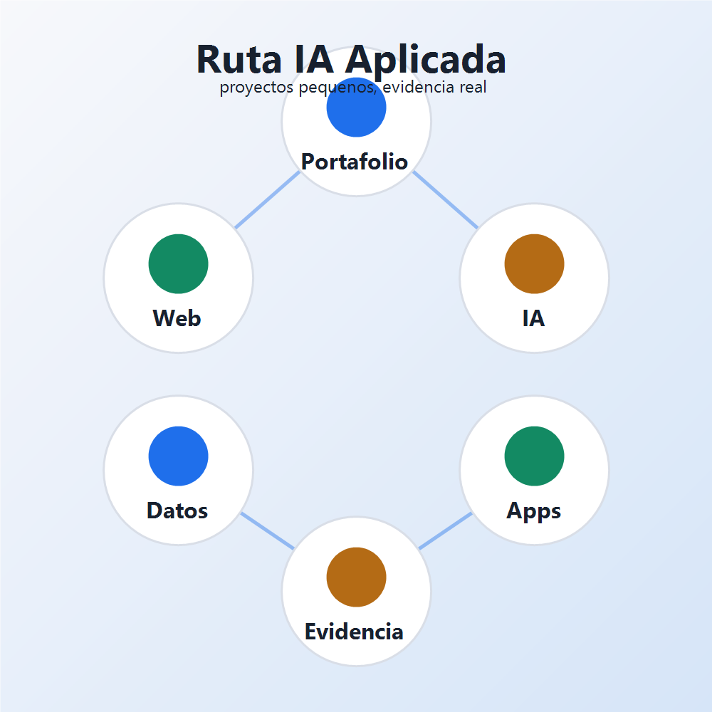

Objetivo
Aprender IA creando productos pequenos, no solo probando prompts aislados.
Portafolio de aprendizaje
Registro de proyectos pequenos para aprender a integrar IA en desarrollo web, automatizacion, datos y sistemas utiles.

Aprender IA creando productos pequenos, no solo probando prompts aislados.
Proyecto, prompt, resultado, correccion, evidencia y publicacion.
Un portafolio progresivo para mostrar avance tecnico y criterio profesional.
Ruta inicial
Proyecto 1
Pagina para registrar avances, resultados, capturas y reflexiones.
Estado: en progresoProyecto 2
Organizador que prioriza tareas usando criterios claros y asistencia de IA.
Estado: pendienteProyecto 3
Chatbot especializado en apuntes, resumanes, preguntas y explicaciones.
Estado: pendienteProyecto 4
Herramienta para extraer ideas, riesgos, conclusiones y preguntas.
Estado: pendienteRegistro tecnico
Este primer proyecto sirve como base para documentar los siguientes trabajos de IA aplicada durante la universidad.